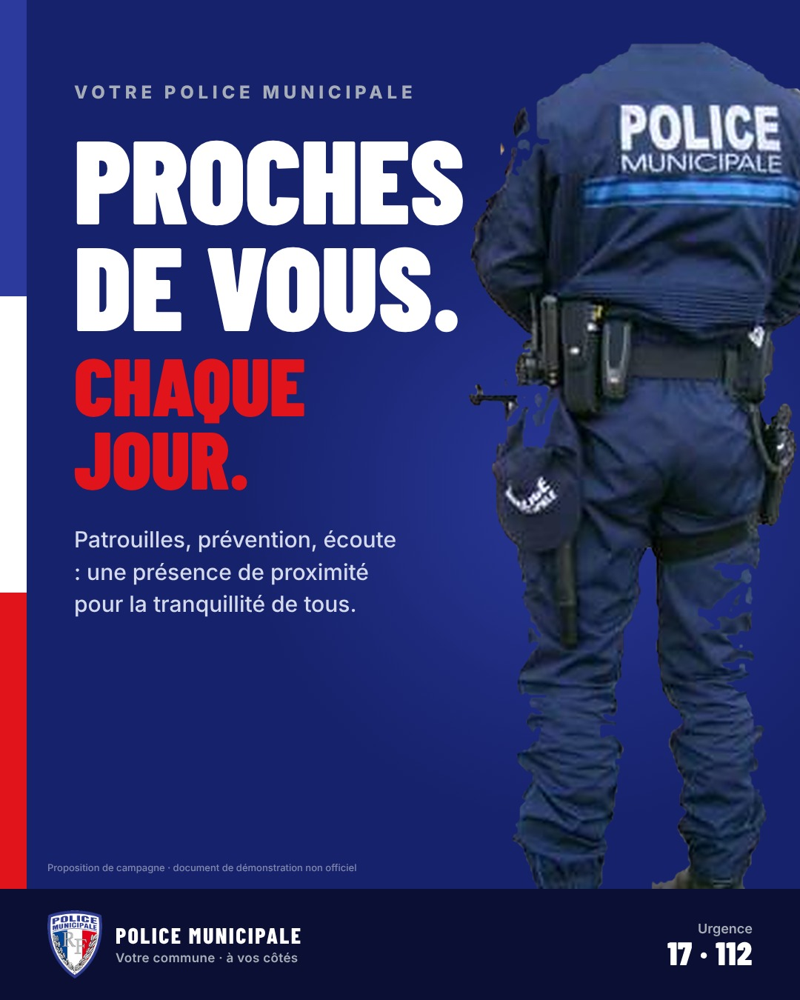
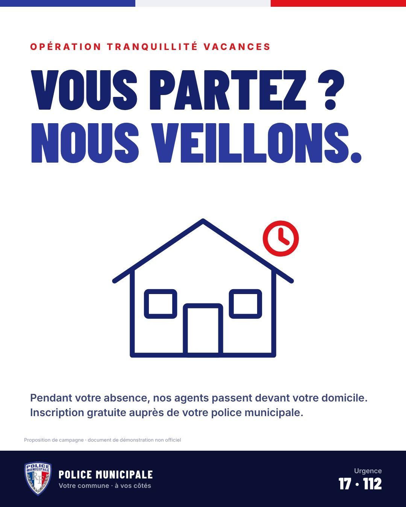
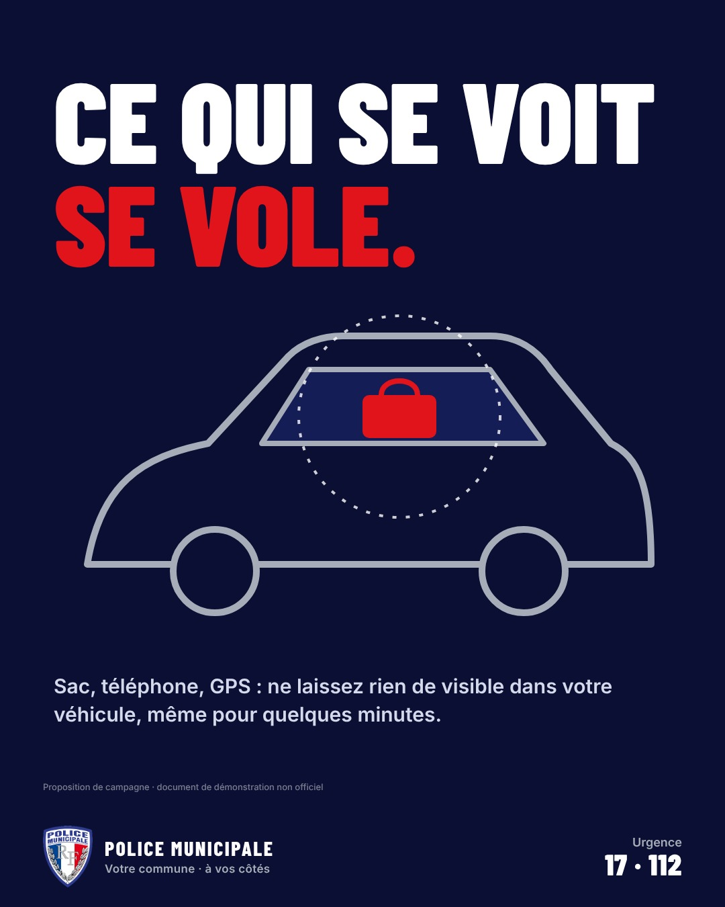
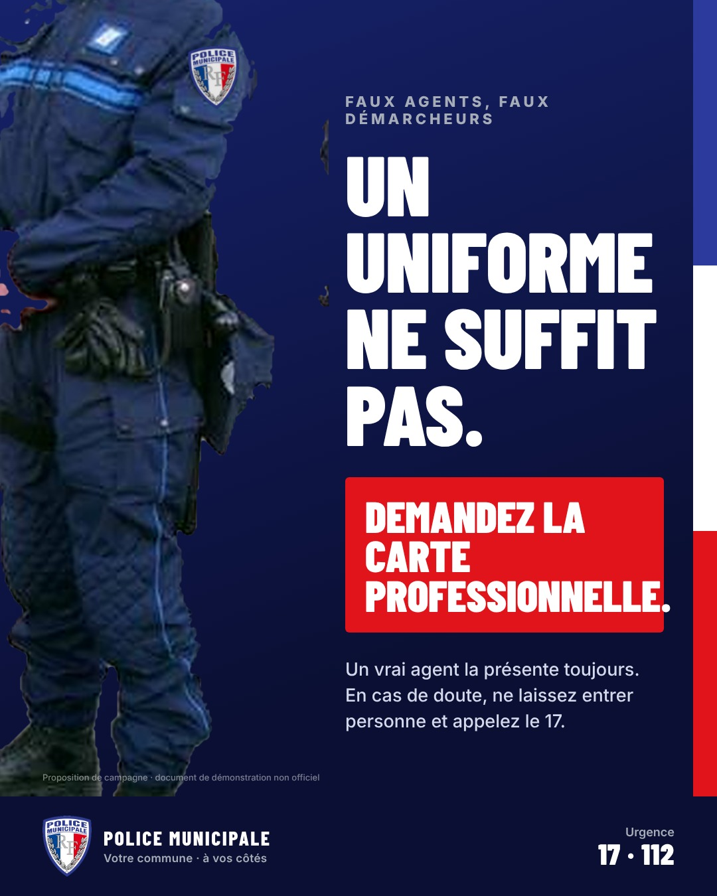
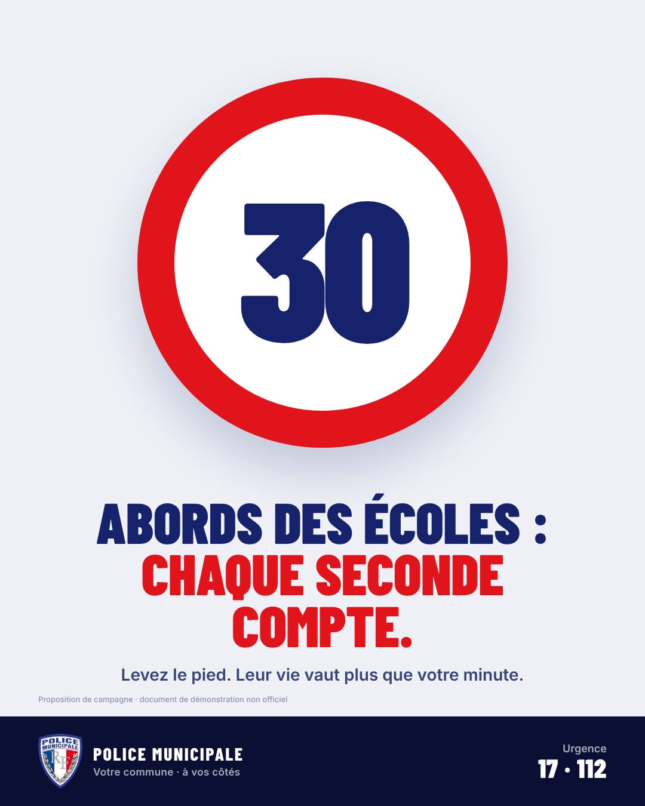
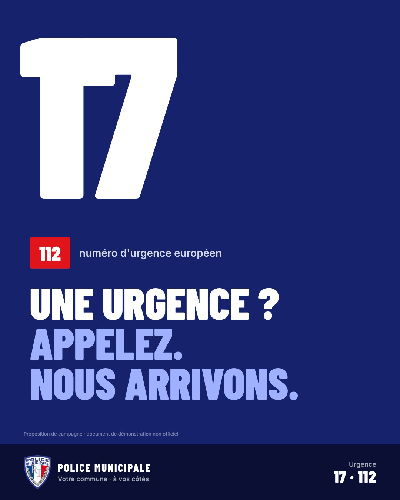
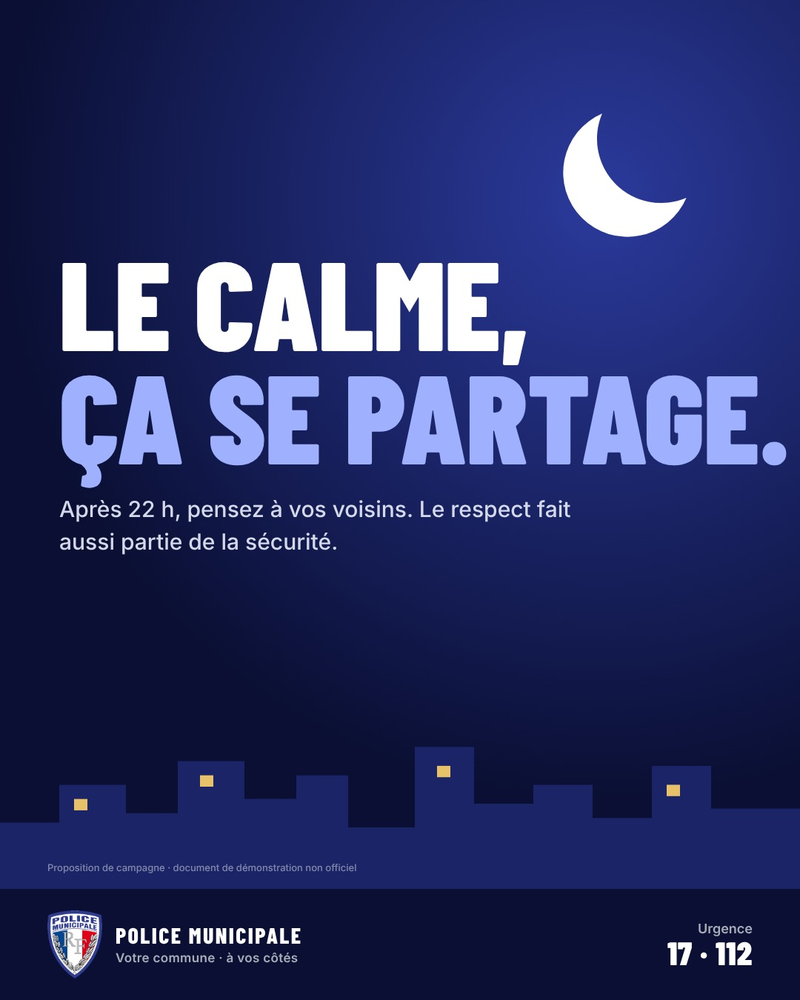
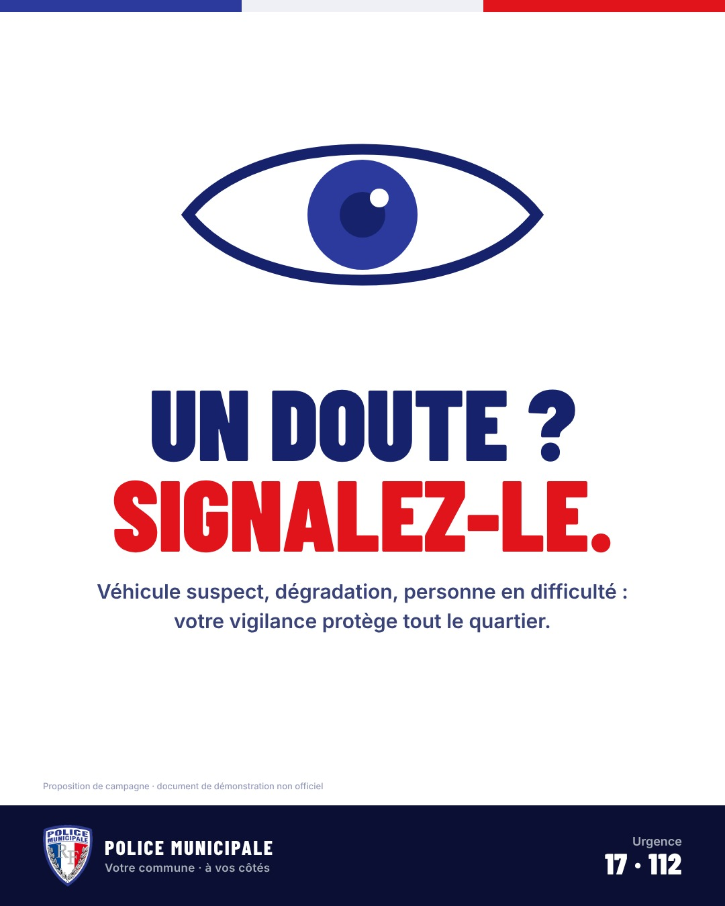

Campagne de sensibilisation
Proches
de vous.
Chaque jour.
Huit affiches pour une police municipale de proximité : prévention des vols, tranquillité vacances, sécurité aux abords des écoles, numéros d'urgence et vivre-ensemble. Direction artistique reprise de l'écusson : bleu, blanc, rouge et argent.
Proposition de campagne E-DUST Solutions · document de démonstration non officiel

Proximité

Tranquillité vacances

Vols dans les véhicules

Faux agents

Abords des écoles

Numéros d'urgence

Calme nocturne

Signalement